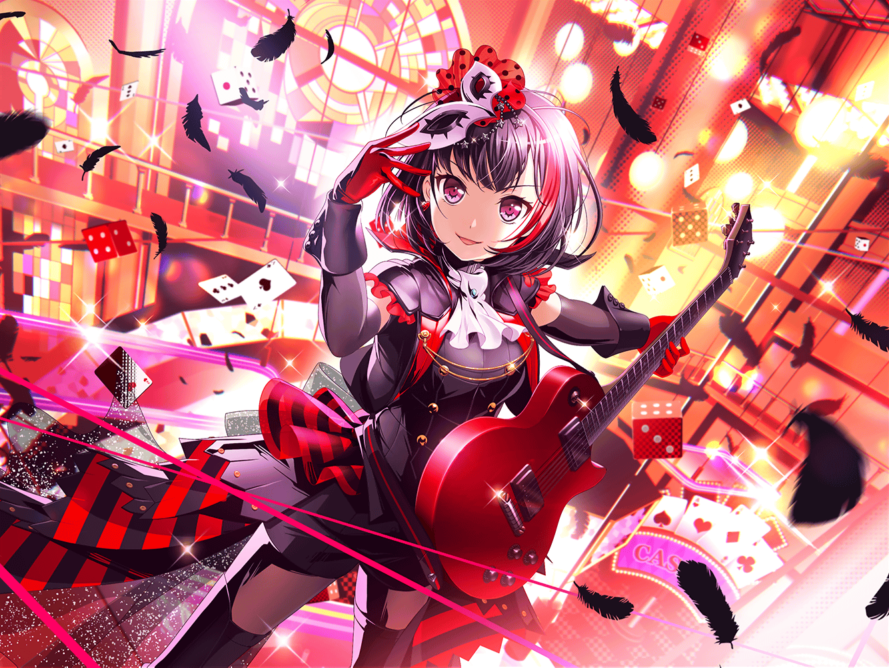

CiRCLE ロビー
蘭
今日もスタジオありがとうございました
まりな
あっ、そういえば蘭ちゃん！
聞いたよ、この前怪盗団になったんでしょ？
蘭
ちょ、ちょっとまりなさん……！
声が大きいです……！
まりな
……あっ、ごめん。そうだよね！
怪盗団なんだもん、正体は秘密にしておかなくっちゃ！
蘭
そういうことじゃないんですけど……
……はぁ、ていうか誰から聞いたんですか、それ？
まりな
ひまりちゃんが言ってたよ！
すっごく楽しかったって！
蘭
やっぱり……
まりな
蘭ちゃん達、コードネームで呼び合ってたんでしょ？
いいなー、カッコイイよね！
蘭
え、カッコイイんですかね……
まりな
蘭ちゃんはみんなからなんてコードネームで、
呼ばれてたの？
蘭
い、言わなきゃダメですか、それ……
まりな
えー、だって気になるじゃん！
{{userName}}さんも気になるよね～？
蘭
２人ともなんでそんなに興味津々なんですか……
……【スカーレット】って言われてました
まりな
カッコイイ！
【スカーレット】・蘭ちゃん！
蘭
ちょ、マジでやめてください……っ！
まりな
ごめんごめん。でもいいなー！
怪盗とかちょっと憧れちゃう！
……あ、そうだ！
まりな
私達のコードネームも考えてみない？
まずは{{userName}}さんからね！
それじゃあ蘭ちゃん、どうぞ！
蘭
えっ、あたしが考えるんですか……？
うーん……{{userName}}さんか……
えーと……
蘭
……ダメだ、思いつかない。
{{userName}}さんは、コードネームとかじゃなくて、
今の名前が１番似合ってるよ
まりな
あははっ、確かにそうかも！
それじゃあ私はどうかな？ 次はキミが考える番ね！
カッコイイやつでよろしく！
蘭
あはは、{{userName}}さんが無茶ぶりされてる。
カッコイイの、頑張って考えてね